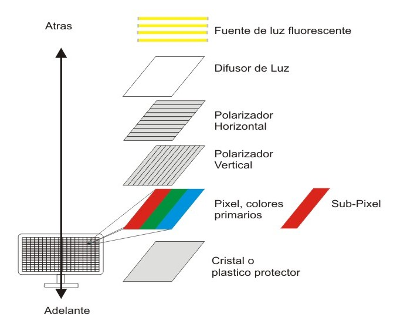
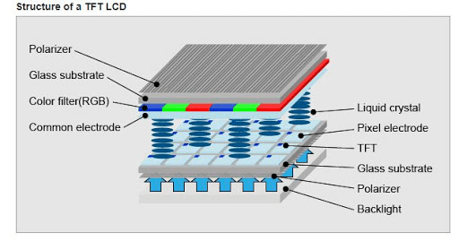
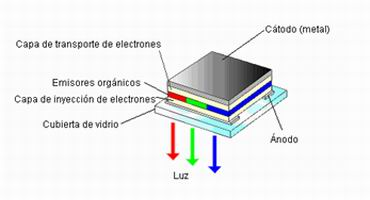

Componentes Principales
- Pantalla: Display táctil que muestra la interfaz gráfica y permite la interacción del usuario.
Tipos de pantallas
(Liquid Crystal Display):LCD ¿Qué es? Las pantallas LCD utilizan cristales líquidos para mostrar imágenes. Son comunes en muchos dispositivos debido a su menor costo de producción, una de las desventajas de la la pantalla es que este consume moderadamente la energia de la bateria, asimismo estas pantallas podemos encantrar en telefonos de Gama Baja
(In-Plane Switching) O TFT :LCD O IPS/TFT ¿Qué es? Las pantallas IPS son variantes de las pantallas LCD, pero por otro lado este consume mas energia que los OLED,AMOLED y LCD.
(Organic Light-Emitting Diode)OLED ¿Qué es? Las pantallas OLED utilizan materiales orgánicos que emiten luz cuando se aplica electricidad. No requieren retroiluminación, sin embargo este carece de la tecnologia matriz de las pantallas AMOLED haciendo que reaccione ligeramente menos preciso, si se habla de contraste negros este brinda negros poco profundos, en la parte del brillo este es levemente menor a comparacion de una pantalla Amoled, por otra parte cabe recalcar que dichas pantallas se encuentran en gamas medias hacia arriba, por otra parte este tiene mayor eficiencia en la bateria.
(Active Matrix OLED)AMOLED ¿Qué es? Las pantallas AMOLED estan basados en la teconologia de las pantallas OLED, proporcionando mejores colores haciendo que estos sean mas intensos, por otra parte los contrastes profundos son similares a la pantalla OLED, con la diferencia que estos apagan completamente los pixiles individualmente, en el brillo las Pantallas AMOLED pueden alcanzar niveles mas altos que los OLED, teniendo mejor visibilidad bajo el sol, por lo tanto estas pantallas vienen en dispositivos de Gamas Altas, por otra parte este se posee mayor degradación con el tiempo que las pantallas IPS.
- Procesador (CPU): Unidad central de procesamiento que ejecuta las operaciones y aplicaciones del teléfono.
- Memoria RAM: Almacena temporalmente datos y procesos que están en uso activo.
- Almacenamiento Interno: Memoria flash que guarda datos, aplicaciones y sistema operativo.
- Batería: Fuente de energía que alimenta el teléfono.
- Cámara: Dispositivo de captura de imágenes y videos.
- Micrófono: Capta el sonido para llamadas y grabaciones de audio.
- Altavoz: Reproduce el audio durante llamadas, música y video.
- Antenas: Permiten la conectividad inalámbrica como WiFi, Bluetooth, GPS y señal celular.
- Conectores y Puertos: USB, HDMI, Jack de audífonos, etc.
- Sensor de Luz y Proximidad: Ajusta el brillo de la pantalla y detecta cuando el teléfono se acerca a la cara durante una llamada.
- Botones Físicos y Teclas: Botones de encendido, volumen y teclas de navegación.
- Sistema Operativo: Software que gestiona las funciones del teléfono y permite la ejecución de aplicaciones.
- Tarjeta SIM: Almacena información de la red celular y datos del usuario.
- Carcasa y Componentes de Hardware: Estructura que sostiene y protege todos los componentes internos del teléfono.